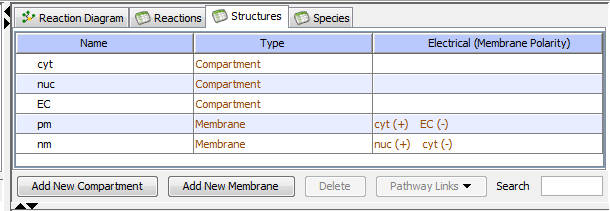

The table view lists structures and their properties (Type of Structure, Inside Structure and Outside Parent). Items in black can be edited; items that cannot be edited are in brown.

Add a new compartment by double clicking "add new here" and typing a new name to the list, or by using the "Add new" button below the table. A new volume and membrane structure will automatically be generated.
Edit the structure name by double clicking in the table, or within the Properties pane
Delete compartments by selecting one or more compartments and using the "delete selected" button. Compartments that contain species cannot be deleted.
The bottom pane of the window displays the Structure Properties depending on on the current selection.